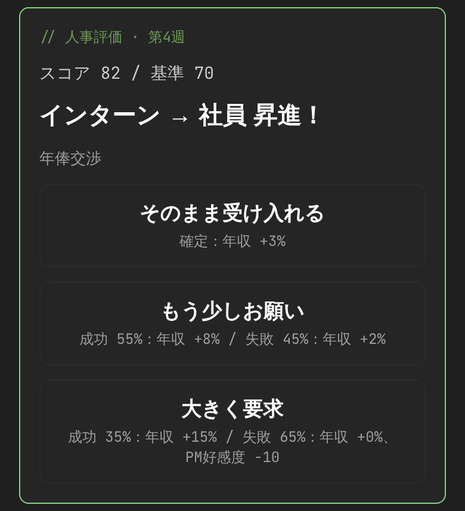
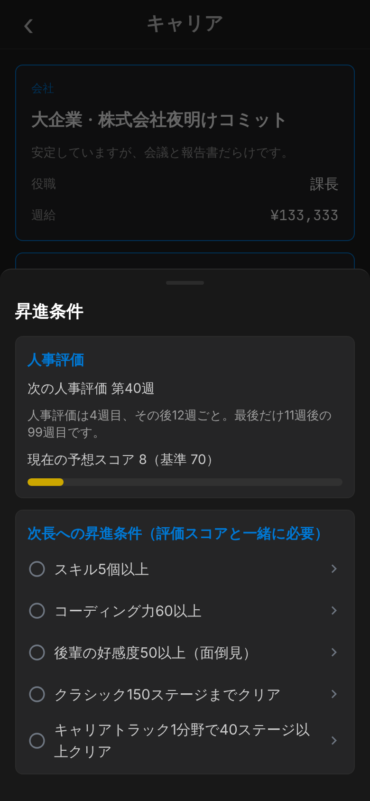
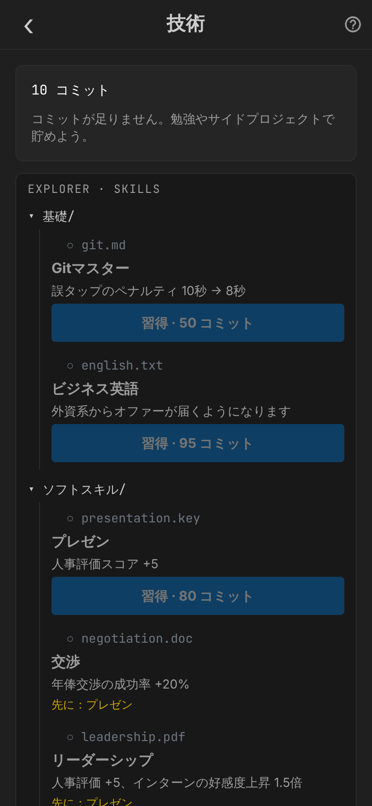
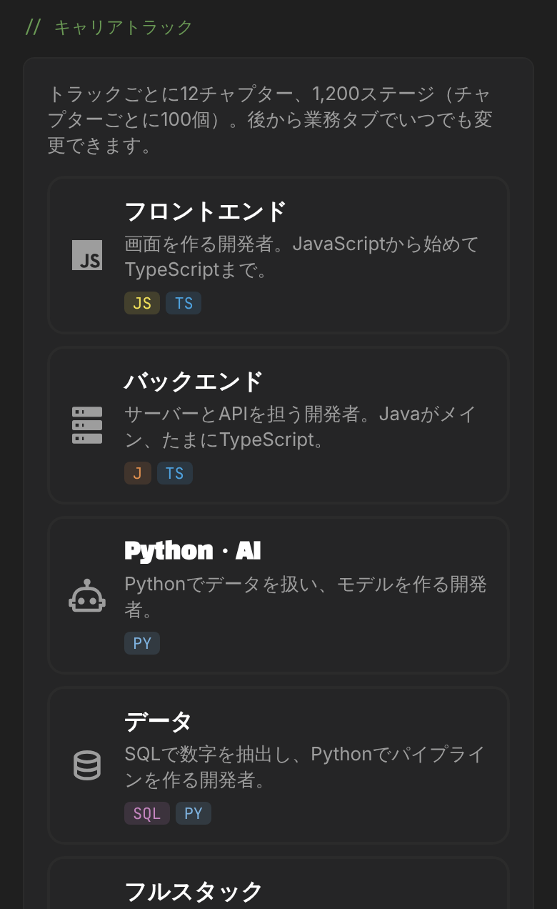
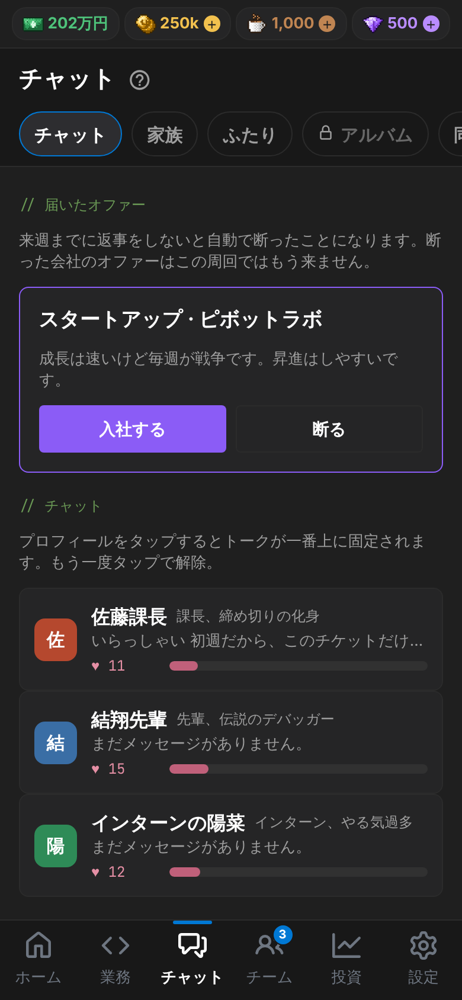
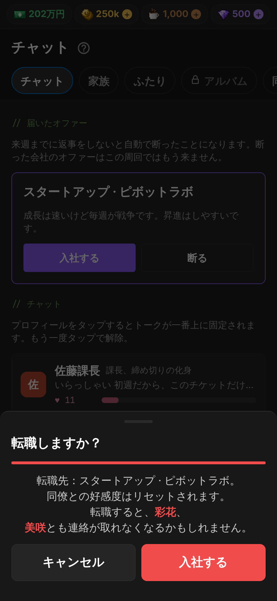

攻略本 › 昇進、キャリア
昇進、キャリア
役職10段階の昇進条件、人事評価スコアの計算、キャリアトラック、会社5社とサーガ、転職まで
- 📋 人事評価は第4、16、28、40、52、64、76、88、99週、ちょうど9回です。1回に1役職ずつしか上がらないので、インターンから始めると9回全部通らないとCTOになれません。
- 🧮 評価スコアは成果をいちばん重く見て、次に評判、リーダーの好感度を見ます。スコアが超えても役職ごとの昇進条件を満たしていないと止まります。
- 🏁 コイン、キャリアポイント（CP）は100週を最後まで終えた周回だけもらえます。起業、称号エンディングのように早く終わると0です。
まずは周回のしくみから 🗓️#
1周回は100週です。毎週スケジュールを組み、チケットを解き、メッセージに答えて、1週間を締めるを押すと1週が過ぎます。スタートはいつも大企業、株式会社夜明けコミットのインターンで、最初の能力値はコーディング力25、集中力60、体力80、ストレス20、評判20、残高¥333,333、コミット10です（周回ボーナスで上げられます）。
| 周回の終わり方 | コイン、CP | 途中で満たしたエンディング | 完走として数える |
|---|---|---|---|
| 100週を最後まで終えた | もらえる（役職に応じて） | すべて記録 ✅ | はい |
| 称号ストーリーのエンディングで早く終わった（連続起業家の上場、すっからかん起業などを含む） | 0 | そのエンディング1つだけ | はい |
| 退職勧告、唐揚げ屋の店主、サイドプロジェクトの起業（起業大成功、廃業） | 0 | そのエンディング1つだけ | いいえ |
| ホームの周回を終了ボタン | 0 | 何も残らない | いいえ |
- キャリアポイント（CP）は役職が高いほど多くなります（インターン20、1役職ごとに +1、CTO 29）。周回ボーナスキャリア管理で +1 / +3 / +5。
- コインも役職が高いほど多くなります（インターン2,000、1役職ごとに +100、CTO 2,900）。退職金積立で段階ごとに +5%。
- 退職した起業家は役職がないので、インターンと同じに計算されます（CP 20、コイン2,000）。
- 画面を触ってプレイした時間が10分未満の周回は、CP、コイン、コミットXP、デイリークエストがありません（エンディングは残ります）。
- 初めて見るエンディングごとにカードパックが出ます。ふつうのエンディングはレアパック、称号エンディングはエピックパックで、早く終わった周回でももらえます。
周回の途中でエンディング条件クリア！のバナーが出たエンディング（例: 会社のサーガの結末、海外本社へ、サイドプロジェクト買収）は100週を最後まで終えないと図鑑に一緒に残りません。称号エンディングや起業で周回が早く終わるとそのエンディング1つだけが記録され、前に集めたバナーのエンディングは消えます。収集が目的なら、早く終わる選択は最後にしましょう。
エンディング条件クリア！のバナーが出ない静かなエンディングもあります: 平凡な開発者、万年係長、AIに席を譲る、帰農デベロッパー、ワークライフバランスの達人。この5つは第100週の最終判定でだけ出て、もっと上の順位のエンディング（結婚、CTO、サイドのエンディングなど）を1つでも満たすと押し出されます。
役職10段階と月給 💼#
役職は下の10段階です。月給は役職と会社で決まり、スキルの年俸ボーナスと昇給が積み重なるほどさらに上がります。週給は月給の4分の1です。毎週生活費¥50,000が引かれます（月¥200,000）。
| 役職 | 大企業の月給 | スタートアップ | 外資系 | 朝コミット |
|---|---|---|---|---|
| インターン | ¥222,222 | ¥177,778 | ¥311,111 | ¥266,667 |
| 社員 | ¥333,333 | ¥266,667 | ¥466,667 | ¥400,000 |
| 主任 | ¥377,778 | ¥302,222 | ¥528,889 | ¥453,333 |
| 係長 | ¥444,444 | ¥355,556 | ¥622,222 | ¥533,333 |
| 課長 | ¥533,333 | ¥426,667 | ¥746,667 | ¥640,000 |
| 次長 | ¥622,222 | ¥497,778 | ¥871,111 | ¥746,667 |
| 部長 | ¥722,222 | ¥577,778 | ¥1,011,111 | ¥866,667 |
| 役員 | ¥888,889 | ¥711,111 | ¥1,244,444 | ¥1,066,667 |
| 常務 | ¥1,111,111 | ¥888,889 | ¥1,555,556 | ¥1,333,333 |
| CTO | ¥1,666,667 | ¥1,333,333 | ¥2,333,333 | ¥2,000,000 |
表はスキル、昇給のボーナスが1つもないときの月給です。フリーランスは月給がなく、別に計算します（フリーランス参照）。
- 💰 スキルの年俸ボーナス: TypeScript +3%、React +5%、Java +3%、クラウド +5%（全部合わせると +16%）。
- 📈 年俸交渉で上がった分と、転職するたびの +5%が積み重なっていきます。
- 🎖️ 周回ボーナス年俸交渉の達人は週給を +5% / +10% / +15%上げてくれます。
- 🎫 役職が上がるとチケットも難しくなります: インターン、社員は1段階、主任、係長は2段階、課長〜部長は3段階、役員からは4段階。
人事評価スコアはこう計算されます 📋#

評価の基準点（このスコアを超えると昇進候補）#
インターンから社員に上がるときだけ30点固定で、そのあとは55点から始まり、役職が1つ上がるごとに5点ずつ高くなります。スタートアップは6点低くて簡単、外資系は4点高くて厳しいです。
| 今の役職 → 次 | 大企業、朝コミット | スタートアップ | 外資系 |
|---|---|---|---|
| インターン → 社員 | 30 | 30 | 30 |
| 社員 → 主任 | 55 | 49 | 59 |
| 主任 → 係長 | 60 | 54 | 64 |
| 係長 → 課長 | 65 | 59 | 69 |
| 課長 → 次長 | 70 | 64 | 74 |
| 次長 → 部長 | 75 | 69 | 79 |
| 部長 → 役員 | 80 | 74 | 84 |
| 役員 → 常務 | 85 | 79 | 89 |
| 常務 → CTO | 90 | 84 | 94 |
評価スコアは何で決まる？#
スコアは成果をいちばん重く見て、次に評判、リーダーの好感度の順に見ます。そこにボーナスがそのまま足されます。
- 成果は前回の評価から毎週出した成果を見ます。毎週成果12をこつこつ出せば満点です。
- 評判、リーダーの好感度は評価するその瞬間の値です。
- ボーナス（全部足されます）:
- プレゼンのスキル +5、リーダーシップのスキル +5
- 外資系でビジネス英語 +3
- 装備スケジュール管理アプリのサブスク +3
- サイドプロジェクト50以上で +3、100以上ならさらに +3
- 周回ボーナス発表の天才 +2 / +4 / +7
- 結婚後の育児中の恋愛効果家庭的な開発者 +3
大企業の係長（基準65）で週の成果の平均10.3、評判50、リーダーの好感度60なら70点で合格です。プレゼンのスキル1つだけでも +5なのでずっと余裕ができます。
週の成果はどこから出る？#
- 業務1日1.2、残業1日2.2（会社ごとに違い、スタートアップは多めに、大企業と朝コミットは少し少なめに貯まります）。
- チケット: S 6、A 4、B 2、C 1（会社によって少し違います）。チケットを解けないと成果 −3、評判 −3、リーダーの好感度 −5、ストレス +3。
- チームプロジェクト勝利: ★1 1.5、★2 2.5、★3 4（1週最大6）。
- メッセージの返信にも成果が付くものがあります。
- 曜日の効果: 同じ業務、残業、勉強、サイドを3日連続で入れると3日目から +20%、月曜 −10%、金曜 +10%、残業の翌日の業務、残業は成果、評判 −30%、週末の枠は1.4倍、評価の週は成果1.5倍。
曜日の効果まで入れて計算したスケジュール別の1週です（大企業、評価の週ではない、装備、周回ボーナス、メッセージを除く）。
| スケジュール（月〜金、週末） | スケジュールの成果 | + チケットS | ストレス/週 | 体力/週 |
|---|---|---|---|---|
| 基本のスケジュール: 業務、業務、勉強、業務、業務、休憩 | 4.32 | 9.72 | +10.2 | −10.8 |
| 同僚とランチ、業務、業務、業務、業務、休憩 | 4.88 | 10.28 | −6.8 | −8.8 |
| 同僚とランチ、業務、業務、業務、勉強、休憩 | 3.46 | 8.86 | −8.8 | −5.8 |
| 業務5日、休憩 | 6.07 | 11.47 | +12.2 | −13.8 |
| 業務、残業、休憩、業務、残業、休憩 | 6.21 | 11.61 | +9.2 | −10.8 |
| 残業5日、休憩 | 8.32 | 13.72 | +32.2 | −38.8 |
ストレスには会社が毎週足す分（大企業 +2）が入っています。評価の週はスケジュールの成果が1.5倍なので、同じスケジュールがずっと強くなります（例: 同僚とランチ、業務4、休憩 → 7.32）。
最初に入っている基本のスケジュール（業務、業務、勉強、業務、業務、休憩）はストレスが毎週 +10くらい貯まります。手を付けないと数週で燃え尽きが来て、燃え尽き3回で唐揚げ屋の店主のエンディングで周回が終わります。基本のスケジュールのままだと100% 燃え尽き3回で唐揚げ屋の店主です（ふつう第35週くらい、早ければ第28週）。
- 🍜 同僚とランチを毎週1回: リーダーの好感度 +6、ストレス −15。リーダーの好感度が50以上なのにその週にランチがないと −3です。80以上からは期待値のせいで毎週 −2なので、ランチが必ず必要です。
- ⭐ 評価の週（第4、16、28…週）は、スケジュール（業務、残業）で得る成果が1.5倍です。この週は業務を詰め込みましょう。
- 🎤 プレゼン（コミット80）は評価 +5なので、いちばん先に覚える価値があります。リーダーシップ（160、プレゼンが必要）も +5。
- 🚀 サイドプロジェクトを50まで育てると評価 +3、100なら +6です。
- 🎫 チケットは自分で解いてSを狙いましょう。適当に処理は最高がAで、3週連続からスコアが15ずつ削られます。ストレス70以上だとまったく使えません。
年俸交渉: どれを押すと得？ 💸#
評価が終わると、昇進したかどうかに関係なく年俸交渉が出ます。ボタンに確率がそのまま書いてあります。
| ボタン | 成功確率 | 昇進したとき | 昇進しなかったとき | 失敗すると |
|---|---|---|---|---|
| そのまま受け入れる | 100% | +3% | +1% | なし |
| もう少しお願い | 55%（交渉スキルで75%） | +8% | +3% | それでも +2% |
| 大きく要求 | 30〜55%、評判が高いほど上がる（交渉スキル +20%p） | +15% | +6% | 0%、リーダーの好感度 −10 |
もう少しお願いは失敗しても +2%なので損がありません。必ずそのまま受け入れるよりこちらがいいです。大きく要求は平均は高いですがリーダーの好感度が削られるので、部長からリーダーの好感度90〜100が昇進条件なのを考えると、高い役職ではもう少しお願いが安全です。
役職別の昇進条件の総まとめ 📶#

評価スコアが基準点を超え、下の条件を全部満たすと昇進します。スコアだけ超えるとスコアは十分でしたが、昇進条件が足りませんと出ます。
| 次の役職 | 周回内の条件 | 周回外の条件（以前の記録も認定） |
|---|---|---|
| 社員 | コーディング力20、集中力10、ストレス80以下 | なし |
| 主任 | スキル1つ、コーディング力30、集中力20、ストレス80以下 | なし |
| 係長 | スキル2つ、コーディング力40、評判20、ストレス80以下 | なし |
| 課長 | スキル3つ、評判40 | なし |
| 次長 | スキル5つ、コーディング力60、後輩（インターン）の好感度50 | クラシックチャレンジ150段階まで、キャリアトラック1分野で40段階以上 |
| 部長 | スキル7つ、評判60、リーダーの好感度90 | クラシック300段階まで、キャリアトラックのフルスタック9章80段階 |
| 役員 | リーダーシップのスキル、リーダーの好感度95 | サバイバルのノーマルをクリア、クラシック370段階まで、キャリアトラックのフロントエンド10章85段階 |
| 常務 | スキル10個、評判75、コーディング力75、リーダーの好感度100 | クラシック440段階まで、キャリアトラックのバックエンド11章90段階 |
| CTO | スキル11個すべて、評判100、コーディング力100、リーダーの好感度100、今の周回のチケットS評価95%以上 | クラシック1〜500すべて★★★、キャリアトラック5分野の全段階★★★、チームプロジェクトのオープンソース#12フレームワーク2.0★★★ |
課長までは周回の中だけで満たせばいいですが、次長からはクラシック、キャリアトラックの記録が必要です。周回だけがんばって回すと課長で止まります。クラシックステージとキャリアトラックは周回の外でこつこつ進めておきましょう。記録はどの周回でクリアしても認められます。
評価は9回、昇進は評価ごとに1段階です。インターンから始めると一度も落ちてはいけません。第4週の最初の評価（基準30）から条件をそろえておきましょう。周回ボーナス経験者採用（200 / 400 CP）で社員や主任から始めると1〜2回の余裕ができます。
スキル11個（コミットで覚えます）#

| スキル | コミット | 先に必要 | 効果 |
|---|---|---|---|
| Gitマスター | 50 | - | 誤タップのペナルティ10秒 → 8秒 |
| TypeScript | 65 | - | TSチケット、年俸 +3% |
| Python | 65 | - | Pythonチケット |
| SQL | 65 | - | SQLチケット |
| プレゼン | 80 | - | 人事評価 +5 |
| Java | 80 | - | Javaチケット、年俸 +3% |
| ビジネス英語 | 95 | - | 外資系の提案を受けられる（外資系で評価 +3） |
| 交渉 | 95 | プレゼン | 年俸交渉の成功率 +20% |
| React | 95 | TypeScript | サイドプロジェクト1.2倍、年俸 +5% |
| クラウド | 130 | SQL | 毎週ストレス −1、年俸 +5% |
| リーダーシップ | 160 | プレゼン | 人事評価 +5、インターンの好感度の上昇1.5倍（役員の昇進に必須） |
合計980コミットで11個全部覚えられます。勉強（1日コミット5）がいちばん早いです。11個全部覚えるとエンディング伝説のアーキテクトもついてきます。
キャリアトラック5分野 🛤️#

キャリアトラックはコードレビュー（O/X）モードです。分野ごとに12章、章ごとに100段階で1,200段階、5分野合わせて6,000段階です。すべての章が最初から開いていて、章の中では1段階ずつ開きます。
| 分野 | 言語 | 章（1 → 12） |
|---|---|---|
| フロントエンド | JavaScript, TypeScript | 初めてのボタン、フォームバリデーション、リストのレンダリング、状態管理、API連携、ルーティング、型の導入、コンポーネント設計、パフォーマンス最適化、デザインシステム、大規模リファクタリング、フロントリード |
| バックエンド | Java, TypeScript | Helloサーバー、REST API、DB接続、認証、トランザクション、キャッシュ、バッチ処理、メッセージキュー、MSA分割、障害対応、大量トラフィック、バックエンドリード |
| Python・AI | Python | Python基礎、リストと辞書、ファイル処理、クローラー、データ前処理、可視化、初めてのモデル、特徴量エンジニアリング、ディープラーニング、LLM連携、モデルサービング、AIリード |
| データ | SQL, Python | SELECT、結合、集計、サブクエリ、スキーマ設計、マイグレーション、ETL、ダッシュボード、データウェアハウス、リアルタイム処理、データ品質、データリード |
| フルスタック | JavaScript, TypeScript, Python, Java, SQL | サイドプロジェクト、ランディングページ、会員登録、決済、管理画面、統計、通知、検索、レコメンド、グローバルリリース、スケールアップ、CTO |
- ⭐ 1〜80段階は正確さで星をくれます: 80%以上★★★、60%以上★★、それ未満★。適当に押すと（約50%）★1つです。
- 🔥 81〜100段階は地獄の区間で、時間で星をくれます。バグが100個から1,000個まで増え、不正解1回に30秒が付きます。
- ☕ 新しく取った星1つごとにコーヒー1杯（1段階につき最大3杯）。
- 📈 昇進に使われる段階: 次長（どの分野でも40段階）、部長（フルスタック9章80段階）、役員（フロントエンド10章85段階）、常務（バックエンド11章90段階）、CTO（全分野全段階★★★）。
次長の条件の1分野40段階は章に関係なくその分野でクリアした段階の数です。そして部長〜常務の条件は1章から全部クリアする必要はなく、その章のその段階だけクリアすればOKです（章の中では1段階ずつ開くので、その段階の手前までは順番にクリアする必要があります）。キャリアトラックそのものの攻略はスタートガイドにあります。
会社5社の比較 🏢#
| 会社 | 月給の倍率 | 毎週のストレス | 成果の倍率 | サイドの倍率 | 評価の基準 | 入り方 |
|---|---|---|---|---|---|---|
| 大企業、株式会社夜明けコミット | 1倍 | +2 | 0.9倍 | 1倍 | 0 | すべての周回のスタート（残業手当1日¥3,333） |
| スタートアップ、ピボットラボ | 0.8倍 | +4 | 1.2倍 | 1.3倍 | −6 | ヘッドハンター（第12週〜、コーディング力90） |
| 外資系、グローバルテック支社 | 1.4倍 | +3 | 1倍 | 1倍 | +4 | ヘッドハンター（第16週〜、ビジネス英語 + コーディング力90） |
| 朝コミット | 1.2倍 | +2 | 0.9倍 | 1倍 | 0 | ヘッドハンターの大企業の経験者採用（第20週〜、最初の会社を離れたあと） |
| フリーランス | 月給なし | +1 | 1倍 | 1.2倍 | 昇進なし | ヘッドハンター（第24週〜、評判70、称号なしの周回） |
- スタートアップ: 昇進はいちばん簡単ですが、月給0.8倍、ストレス +4。秘密の恋愛のヒロイン紗希に出会う場所です。
- 外資系: 月給1.4倍で最高。評価は厳しいですが、英語のボーナス +3があります。ソフィーがいる場所。
- 朝コミット: ライバルの大企業。月給1.2倍で、社内監査が業界最強に厳しいです。会社のサーガのかわりに監査官麗華の監査がストーリーです。疑惑度が100になるとその週に懲戒解雇で周回が終わるので気をつけましょう。
転職とヘッドハンター 🤝#
ヘッドハンターのメッセージは週の締め画面でだけ来ます。オファーを聞いてみるを押すとメッセンジャータブのいちばん上の届いたオファーに会社が載り、入社するか拒否を選べばOKです。

| 提案 | 来る条件 | 来かた |
|---|---|---|
| スタートアップ、ピボットラボ | 第12週〜、コーディング力90以上、スタートアップに行ったことがない | 条件を満たした最初の週に必ず |
| 外資系、グローバルテック支社 | 第16週〜、ビジネス英語、コーディング力90以上、外資系に行ったことがない | 条件を満たした最初の週に必ず |
| 朝コミット（大企業の経験者採用） | 第20週〜、今スタートアップ、フリーランス、外資系にいて、朝コミットに行ったことがない | 条件を満たした最初の週に必ず |
| フリーランス | 第24週〜、評判70以上、称号なしの周回 | 条件を満たした最初の週に必ず、周回ごとに1回 |
| 海外本社（→ 外資系の提案） | 第60週〜、ビジネス英語、コーディング力75以上 | ときどきランダムで |
| カウンターオファー | 第30週〜、評判55以上 | ときどきランダムで。交渉すると60%で +¥166,667、リーダー −5、失敗するとリーダー −10、ストレス +6 |
会社のサーガの選択肢から提案が来ることもあります（大企業の静かに履歴書を更新する → 外資系、スタートアップの精算 → ほかの会社など）。

転職すると変わること#
- ✅ 役職はそのまま持っていきます。昇給の累積+5%（フリーランスに行くときはなし）。
- 🔄 新しい会社の同僚の好感度は5〜15から新しく始まり、今期の成果もリセットされます。リーダーの好感度が評価スコアの20%で、部長からはリーダーの好感度90〜100が条件なので、高い役職ほど転職直後の評価が大変です。
- 👋 前の会社の人たち（リーダー、先輩、後輩、人事チーム、社長）はメッセンジャーからすぐ消えます。
- 💔 会社のヒロイン: 最初の会社の彩花、美咲、外資系のソフィー、朝コミットの麗華は片想い以上でなければ連絡が途切れます。スタートアップの紗希はスタートアップを離れたら終わりです。
- 🚫 一度辞めた会社には今の周回でもう行けません。断ったり答えなかったりした会社の提案も二度と来ません。
外資系の提案の条件（ビジネス英語 + コーディング力90）が、そのままエンディング海外本社への条件（外資系に在職 + コーディング力90 + ビジネス英語）です。ヘッドハンターを通して外資系に入った瞬間にエンディング条件クリア！が出ます。100週まで終えれば図鑑に残ります。
会社のサーガ: 会社ごとに大事件が起こる 🎬#
大企業、スタートアップ、外資系、フリーランスには第6週から第60週台まで続くストーリーがあります。段階はおおよそ第6 → 16 → 28 → 40（38）→ 54（50）→ 62週に開き、前の段階の選択によって結末が分かれます。結末は途中で満たすエンディングなので、周回は続きます。
- サーガのメッセージは答えないと週が進まない重要なメッセージです。既読スルーするとその会社のストーリーは今の周回では終わりです。
- 途中で転職するとサーガが止まります（その会社の条件に合わない）。連続起業家で退職してもサーガは来ません。
- 段階ごとに決まっているのはいちばん早い週です。転職して入った会社は、その週がもう過ぎていれば入社後に前の段階から順番に来ます。
- 朝コミットにはサーガがありません。かわりに麗華の監査が続きます。
大企業、株式会社夜明けコミット: 決済の大障害#
第6週の深夜の決済障害で始まり、責任の押し付け合い（第16週）→ 監査（第28週）→ TFリーダーの提案（第40週）→ 第54週の結末です。
ネタバレ: 大企業のサーガの結末3つと分かれ道
- 第6週の障害: パジャマのまま接続して自分でロールバック 60%で成功（失敗しても次の段階は開きます）、結翔先輩に電話する、まず障害告知テンプレートを埋める。
- 第16週の責任の押し付け合い: 「はい、それでお願いします」（インターンのせい、インターンの好感度 −25）、「僕のオンコールでした…」（責任を取る）、レガシーモジュールの暴露 50%（失敗すると責任を取ったことに）。
- 第28週: インターンのせいにしたなら、監査で認めて謝る（懲戒）/ 「課長の指示でした」と暴露する 50% / 最後まで「記憶にありません」 35%。失敗すると懲戒。そうでなければふつうの監査。
- 第40週のTFリーダー（懲戒がないとき）: 引き受ける 75%で成功。
- 条件
- 懲戒なしで監査を乗り切り、第40週のTFリーダーを引き受けるで成功 → 第54週の特別昇進のメッセージ。
- 報酬
- 返信によって¥333,333または¥166,667 + 評判。役職が上がるわけではありません。
- 条件
- 懲戒なしで監査を乗り切り、TFリーダーを丁寧に辞退するか、引き受けて失敗 → 第54週のメッセージ。静かに履歴書を更新するを選ぶと外資系の提案も来ます。
- 条件
- インターンのせい → 監査で懲戒 → 第54週の地方転勤のメッセージで受け入れて地方へ行く。辞表を出してスタートアップへ行くを選ぶと、エンディングなしですぐスタートアップに移ります。
スタートアップ、ピボットラボ: デモからイグジットまで#
第6週の投資デモ → 第16週の資金調達 → 第26週のクランチ → 第38週の燃え尽きの危機または給料返上 → 第50週の買収提案 → 第62週の結末です。
ネタバレ: スタートアップのサーガの結末3つと分かれ道
- 第16週の資金調達でストックオプションの上乗せを求める 60%の成功が大型イグジットのカギです。
- 第26週のクランチ: 全力で身を削るか陽菜さんとデプロイ自動化の失敗（45%）なら第38週に先輩の燃え尽きのストーリーへ、そうでなければ給料返上のストーリーへ行きます。
- 第50週の買収提案: 賛成またはサービス存続を条件に逆提案（45%）が成功すれば売却、反対や逆提案の失敗ならピボット。
- 条件
- ストックオプション確保 + 第50週に売却 → 第62週の精算のメッセージ。
- 報酬
- 精算金¥3,333,333。買収した会社に出社するは転職の提案も付き、精算金でひとまず休むは2週の休み。
- 条件
- ストックオプションなしで売却 → 第62週の雇用承継のメッセージ。
- 報酬
- ¥333,333 + ほかの会社の提案。
- 条件
- 第50週の買収に反対または逆提案の失敗 → 第62週のピボットのメッセージ。最後まで一緒にやる 40%なら +¥1,111,111。
外資系、グローバルテック支社: 移管のうわさ#
第6週のタウンホール → 第16週の移管のうわさ → 第28週の希望退職の案内 → 第40週の労組総会、本社1on1、耐える → 第54週の結末です。
ネタバレ: 外資系のサーガの結末4つと分かれ道
- 第28週の希望退職の案内で労組設立の署名に名前を書く = 労組ルート。
- 第16週の本社リポジトリにPR（70%）または第28週の海外ハブ移管TFに志願する（50%）が成功し、労組の署名をしていなければ第40週の本社1on1へ。ここで英語で真っ向勝負する 60%の成功なら本社のオファー。
- どちらでもなければ第40週耐える / ヘッドハンターに電話する（スタートアップの提案、すでにスタートアップに行ったことがあれば提案なし）→ 第54週に支社解散。
- 条件
- 労組の署名 → 第40週の労組総会 → 第54週の交渉のメッセージ（どの返信でも）。
- 条件
- 本社PRや移管TFが成功 → 1on1で英語で真っ向勝負が成功 → 第54週のオファーでサインする（+¥555,556）。
- 条件
- 同じ道で本社のオファーまで行って支社に残る同僚を思って断る。
- 条件
- 労組の署名も本社のオファーもなし → 第54週の支社解散のメッセージ（どの返信でも）。
フリーランス: ショッピングサイトの外注と残金の未払い#
第6週のショッピングサイトの外注 → 第16週の機能追加 → 第28週の残金の未払い → 第40週の訴訟、被害者の会、再依頼 → 第54週の結末です。フリーランスは称号のない周回でしかなれないので、このサーガも称号のない周回専用です。
ネタバレ: フリーランスのサーガの結末2つと分かれ道
- 第6週の「契約書と前金30％が先です」 60%の成功で契約書を確保（+¥1,000,000）→ 第40週の訴訟で有利です。
- 第28週の残金の未払い: 内容証明を送る = 訴訟ルート、開発者コミュニティに経緯を投稿する = 被害者の会ルート、保守の停止を正式に通知する 45%なら¥2,333,333をすぐ受け取って再依頼ルート。
- 条件
- 第40週の段階で被害者の代表を引き受けなかったすべての道 → 第54週のエージェンシーの提案（どの返信でも: エージェンシー / 正社員の提案 / 単価アップ）。
- 条件
- 第28週にコミュニティに経緯を投稿 → 第40週の被害者12人のメッセージで代表を引き受ける → 第54週に集団訴訟で勝利（+¥2,333,333）。
よくある質問#
- スコアは基準を超えたのに昇進できませんでした。
- 役職ごとの条件のどれかが足りないんです。ホームで役職を押してキャリア画面の昇進条件を開き、まだ満たしていない行を確認しましょう。次長からはクラシックステージ、キャリアトラックの記録が必要なので、周回の中だけでは満たせません。
- 転職すると役職はリセットされますか？
- いいえ。役職はそのまま、昇給の累積は +5%です。そのかわり同僚の好感度と今期の成果が新しく始まります。
- フリーランスの提案が来ません。
- 称号を付けた周回には来ません。称号なしで第24週以降に評判70を超えるとその週に来ます。1周回に1回だけで、断ったり既読スルーしたりすると終わりです。
- 起業したいのに退職して全力投球が押せません。
- 残高222万円が必要です。そのお金は引かれず、確認だけです。周回ボーナス親からの仕送り、ランチを減らして貯金、シード投資金でそろえましょう。
- シリーズAや上場に失敗したら、またチャンスは来ますか？
- いいえ。シリーズA（第34週）と上場（第60週、20%）は周回ごとに1回です。失敗したらその周回では終わりです。
- 称号エンディングで早く終えたらコインが0です。
- コインとCPは100週を最後まで終えた周回だけもらえます。そのかわり初めて見る称号エンディングならエピックパックが出て、完走の回数にも数えます。
- 会社のサーガのエンディングが出たのに図鑑にありません。
- サーガの結末は途中で満たすエンディングなので、100週を終えないと図鑑に残りません。その前に称号エンディングや起業で周回が終わると消えます。